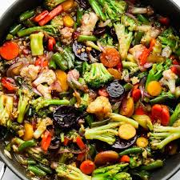
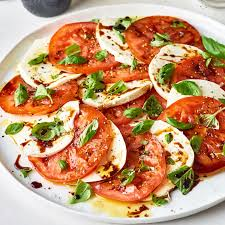
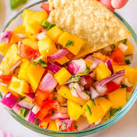

Welcome to Our Recipe Book
Explore a diverse array of mouthwatering recipes that promise to tantalize your taste buds. From comforting classics to innovative creations, our collection caters to all culinary preferences and skill levels. Embark on a flavorful journey and discover new favorites to impress your family and friends. With detailed instructions and helpful tips, cooking delicious meals has never been easier. Get ready to elevate your culinary skills and delight in every bite!
Our Top Recipes
Spaghetti Carbonara
A classic Italian pasta dish made with eggs, cheese, pancetta, and black pepper.
Ingredients:
- 200g spaghetti
- 2 large eggs
- 50g grated Parmesan cheese
- 100g pancetta or bacon, diced
- Freshly ground black pepper
- Salt to taste
Instructions:
- Cook spaghetti in a large pot of boiling salted water until al dente.
- In a bowl, whisk together eggs, grated Parmesan cheese, and freshly ground black pepper.
- In a skillet, cook diced pancetta until crispy.
- Drain cooked spaghetti and add to the skillet with pancetta. Remove from heat.
- Quickly pour the egg and cheese mixture over the hot pasta, stirring quickly to coat the strands well.
- Season with additional salt and pepper if needed. Serve immediately.
Chicken Parmesan
Tender chicken breasts topped with marinara sauce and melted mozzarella cheese.
Ingredients:
- 4 boneless, skinless chicken breasts
- 1 cup marinara sauce
- 1 cup shredded mozzarella cheese
- 1/2 cup grated Parmesan cheese
- 1/4 cup breadcrumbs
- 1/4 cup chopped fresh basil leaves
- 2 tablespoons olive oil
- Salt and pepper to taste
Instructions:
- Preheat oven to 400°F (200°C). Lightly grease a baking dish.
- Season chicken breasts with salt and pepper on both sides.
- In a shallow dish, combine breadcrumbs and grated Parmesan cheese.
- Coat each chicken breast with the breadcrumb mixture, pressing gently to adhere.
- Heat olive oil in a skillet over medium-high heat. Add chicken breasts and cook until golden brown on both sides, about 3-4 minutes per side.
- Transfer chicken breasts to the prepared baking dish. Top each breast with marinara sauce and shredded mozzarella cheese.
- Bake in the preheated oven until cheese is melted and bubbly, and chicken is cooked through, about 20-25 minutes.
- Sprinkle chopped fresh basil leaves over the chicken before serving. Enjoy!
Chocolate Brownies
Gooey and indulgent chocolate brownies that melt in your mouth.
Ingredients:
- 1 cup unsalted butter, melted
- 2 cups granulated sugar
- 1 cup all-purpose flour
- 3/4 cup unsweetened cocoa powder
- 1/2 teaspoon baking powder
- 1/4 teaspoon salt
- 4 large eggs
- 1 tablespoon vanilla extract
- 1 cup chocolate chips (optional)
Instructions:
- Preheat oven to 350°F (175°C). Grease a 9x13 inch baking pan.
- In a large mixing bowl, combine melted butter and sugar until well blended.
- Stir in flour, cocoa powder, baking powder, and salt until just combined.
- Beat in eggs, one at a time, until fully incorporated. Stir in vanilla extract.
- If desired, fold in chocolate chips.
- Pour batter into prepared baking pan and spread evenly.
- Bake in preheated oven for 25-30 minutes, or until a toothpick inserted into the center comes out with moist crumbs (not wet batter).
- Allow brownies to cool in the pan before cutting into squares. Enjoy!
Veggie Stir Fry

Colorful assortment of vegetables stir-fried to perfection in a savory sauce.
Ingredients:
- 2 cups mixed vegetables (such as bell peppers, broccoli, carrots, snap peas)
- 2 tablespoons soy sauce
- 1 tablespoon sesame oil
- 2 cloves garlic, minced
- 1 teaspoon fresh ginger, grated
- 1 tablespoon vegetable oil
- Optional: 1 tablespoon cornstarch (for thickening the sauce)
- Salt and pepper to taste
Instructions:
- In a small bowl, whisk together soy sauce, sesame oil, garlic, ginger, and cornstarch (if using). Set aside.
- Heat vegetable oil in a large skillet or wok over medium-high heat.
- Add mixed vegetables to the skillet and stir-fry for 3-4 minutes, or until crisp-tender.
- Pour the sauce over the vegetables and stir to coat evenly. Cook for an additional 2-3 minutes, or until the sauce has thickened slightly.
- Season with salt and pepper to taste.
- Remove from heat and serve hot. Enjoy your Veggie Stir Fry!
Beef Tacos
Soft corn tortillas filled with seasoned ground beef, lettuce, cheese, and salsa.
Ingredients:
- 1 lb ground beef
- 1 packet taco seasoning
- 8 soft corn tortillas
- 1 cup shredded lettuce
- 1 cup shredded cheese
- 1 cup salsa
Instructions:
- In a skillet, cook ground beef over medium heat until browned. Drain excess fat.
- Add taco seasoning to the beef according to package instructions. Stir well.
- Warm the corn tortillas in a separate skillet or microwave.
- Assemble tacos by filling each tortilla with seasoned beef, lettuce, cheese, and salsa.
- Serve immediately and enjoy!
Caprese Salad

Fresh tomatoes, mozzarella cheese, basil leaves, drizzled with balsamic glaze.
Ingredients:
- 2 large tomatoes, sliced
- 8 oz fresh mozzarella cheese, sliced
- 1/4 cup fresh basil leaves
- Balsamic glaze, for drizzling
Instructions:
- Arrange tomato and mozzarella slices on a serving platter, alternating them.
- Tuck basil leaves between the tomato and mozzarella slices.
- Drizzle balsamic glaze over the salad.
- Serve immediately as a refreshing appetizer or side dish.
Vegetable Curry
Hearty vegetable curry simmered in aromatic spices and coconut milk.
Ingredients:
- 2 cups mixed vegetables (such as potatoes, carrots, bell peppers, peas)
- 1 onion, diced
- 2 cloves garlic, minced
- 1 tablespoon curry powder
- 1 can (14 oz) coconut milk
- Salt and pepper to taste
Instructions:
- In a large pot, heat oil over medium heat. Add diced onion and minced garlic, sauté until softened.
- Stir in curry powder and cook for 1 minute.
- Add mixed vegetables and coconut milk to the pot. Season with salt and pepper.
- Simmer for 15-20 minutes, or until vegetables are tender and curry has thickened.
- Serve hot over rice or with naan bread.
Shrimp Scampi

Delicate shrimp sautéed with garlic, white wine, lemon juice, and parsley.
Ingredients:
- 1 lb shrimp, peeled and deveined
- 4 cloves garlic, minced
- 1/4 cup white wine
- 2 tablespoons lemon juice
- 2 tablespoons chopped parsley
- Salt and pepper to taste
Instructions:
- In a large skillet, heat olive oil over medium heat. Add minced garlic and sauté until fragrant.
- Add shrimp to the skillet and cook until pink, about 2-3 minutes per side.
- Pour in white wine and lemon juice, stir to combine.
- Season with salt, pepper, and chopped parsley.
- Serve immediately over cooked pasta or with crusty bread.
Blueberry Pancakes
Fluffy pancakes studded with fresh blueberries and drizzled with maple syrup.
Ingredients:
- 1 cup all-purpose flour
- 1 tablespoon sugar
- 1 teaspoon baking powder
- 1/2 teaspoon baking soda
- 1/4 teaspoon salt
- 1 egg
- 1 cup buttermilk
- 1/2 cup fresh blueberries
- Butter or oil for cooking
Instructions:
- In a large bowl, whisk together flour, sugar, baking powder, baking soda, and salt.
- In a separate bowl, beat egg and buttermilk together. Pour wet ingredients into dry ingredients and stir until just combined.
- Gently fold in fresh blueberries.
- Heat a griddle or skillet over medium heat and lightly grease with butter or oil.
- Pour batter onto the griddle to form pancakes. Cook until bubbles form on the surface, then flip and cook until golden brown on the other side.
- Serve hot with maple syrup and additional blueberries if desired.
Mango Salsa

Refreshing salsa made with ripe mangoes, onions, cilantro, and lime juice.
Ingredients:
- 2 ripe mangoes, diced
- 1/2 red onion, finely chopped
- 1/4 cup fresh cilantro, chopped
- 1 jalapeño pepper, seeded and minced
- Juice of 1 lime
- Salt to taste
Instructions:
- In a mixing bowl, combine diced mangoes, chopped red onion, cilantro, and minced jalapeño.
- Squeeze lime juice over the salsa and season with salt to taste.
- Stir well to combine all ingredients.
- Serve immediately with tortilla chips or as a topping for grilled fish or chicken.